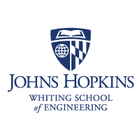
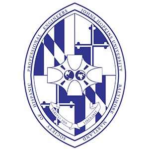

|  |
Engineering Innovation Summer ProgramJudith Mitrani-Reiser, Earthquake Engineering Activity CoordinatorThe students in Professor Mitrani-Reiser's research group participated in the Johns Hopkins Institute Engineering Innovation Summer Program in 2011 and 2012. Professor Mitrani-Reiser and her students designed an educational module for high school students participating in this program to build 'real' healthcare structures consisting of structural members (straws), connections (pins), nonstructural members (spaghetti), and energy dissipating devices (rubber bands). Each healthcare structure had an intensive care unit with patients (lima beans). Historic ground motions were used to load the structures so that the students could experience first-hand the havoc that natural disasters can have on our built environment, and the impact using upfront costs to mitigate their buildings. Website |
Homewood Postdoc AssociationJudith Mitrani-Reiser, Founder and Former Faculty AdvisorThe Homewood Postdoctoral Association (HW-PDA) was formed in 2007 to promote and advocate on behalf of the thriving community of postdoctoral scholars at Johns Hopkins University. Our members include over 200 postdocs across all disciplines from the Whiting School of Engineering and the Zanvyl Krieger School of Arts & Sciences; we strive to engage with all of them. HW-PDA was conceived to foster a sense of community, to provide academic and social support, and to offer opportunities and resources for career development Website |
|  |
Society of Hispanic Professional EngineersJudith Mitrani-Reiser, Faculty AdvisorThe SHPE Johns Hopkins University Chapter is dedicated to changing lives by empowering the Hispanic community to realize its fullest potential and to impact the world through STEM awareness, access, support and development. Website |
Johns Hopkins Whiting School of Engineering Stem Achievement in Baltimore Elementary Schools (SABES) ProgamJudith Mitrani-Reiser, Faculty Advisor, Caitlin Jacques, Lead Mentor, Xinyi Li, MentorSABES is an NSF-funded collaboration between Baltimore City Public Schools and Johns Hopkins University to improve educational outcomes in STEM disciplines throughout Baltimore City’s elementary schools with a targeted focus on extensive community engagement in three neighborhoods. Website |